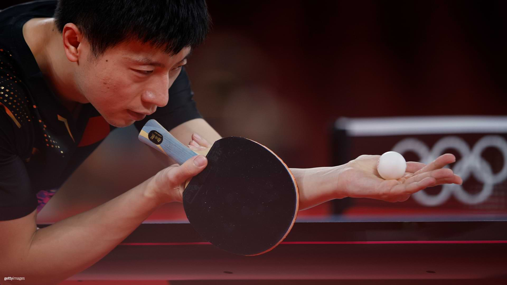

Desvendando os mistérios dos equipamentos de Tênis de Mesa
Voltar

dasdas
Escolher os materiais certos para o tênis de mesa pode parecer uma tarefa complexa, dada a enorme variedade de opções disponíveis no mercado. Neste post, vamos desvendar os principais tipos de borrachas, suas características, dicas de manutenção e recomendações de marcas para ajudar você a tomar a melhor decisão.
Entendendo os Tipos de Borracha
Borracha Lisa (Invertida):
Ela é a borracha mais usada pelos jogadores em geral. Possui uma superfície lisa e os pinos para dentro. Ela é ideal para gerar muito efeito (spin). É a mais usada por jogadores ofensivos e permite grande controle da bola.Pino Curto:
Tem pequenos pinos para fora, proporcionando menos efeito, mas sendo mais imprevisível. O pino curto pode vir com uma esponja mais fina ou até sem, alterando a velocidade e controle da borracha. Ela é ideal para confundir o oponente com o efeito incomum, podendo também ser usada para atacar com alta velocidade ao ver a oportunidade.Pino Longo:
Os pinos são mais longos e flexíveis, permitindo devolver o efeito do adversário e criar bolas imprevisíveis. Muito usada por jogadores defensivos.Anti-spin:
Borracha lisa, mas com pouco ou nenhum efeito. Ideal para neutralizar o spin do adversário e facilitar bloqueios.Anatomia da Borracha
Top Sheet:
Camada superior, pode ser mais aderente (grippy) ou pegajosa (sticky), influenciando o efeito gerado.Esponja:
Fica abaixo do top sheet e pode ser macia (mais controle) ou dura (mais velocidade). A espessura da esponja também influencia o estilo de jogo.Como Escolher a Borracha Ideal
Estilo de jogo:
Ofensivo? Prefira borrachas rápidas e com esponja mais espessa. Defensivo? Opte por pinos longos ou borrachas com mais controle.Nível de habilidade:
Iniciantes devem priorizar controle, enquanto jogadores avançados podem buscar mais velocidade e efeito.Durabilidade:
Borrachas mais macias tendem a desgastar mais rápido. A frequência de troca depende do uso, mas em média varia de 3 a 5 meses para quem treina regularmente.Homologação ITTF:
Para competições oficiais, verifique se a borracha está na lista de aprovadas pela ITTF.Principais Marcas e Recomendações
Butterfly:
Destaque para as linhas Tenergy (ex: Tenergy 05) e Dignics (ex: Dignics 09C), muito usadas por profissionais.DHS:
Hurricane 3 Neo é referência entre as borrachas chinesas, famosa pelo efeito e controle.Victas, XIOM, Tibhar, Donic, Yasaka:
Marcas europeias e japonesas com linhas como Vega, Evolution, Acuda e Rakza, muito populares entre jogadores de todos os níveis.Dicas de Manutenção
Limpe a borracha após cada uso com esponja úmida e água. Evite álcool ou produtos abrasivos. Proteja com filme plástico para aumentar a durabilidade. Guarde a raquete em local seco e protegido do calor.Conclusão
Encontrar a combinação ideal de borracha e madeira é um processo pessoal e pode exigir testes. Não se prenda apenas às marcas mais caras ou populares; experimente diferentes opções e escolha aquela que melhor se adapta ao seu estilo de jogo e nível. Lembre-se: controle e sensação ao jogar são tão importantes quanto velocidade e efeito!